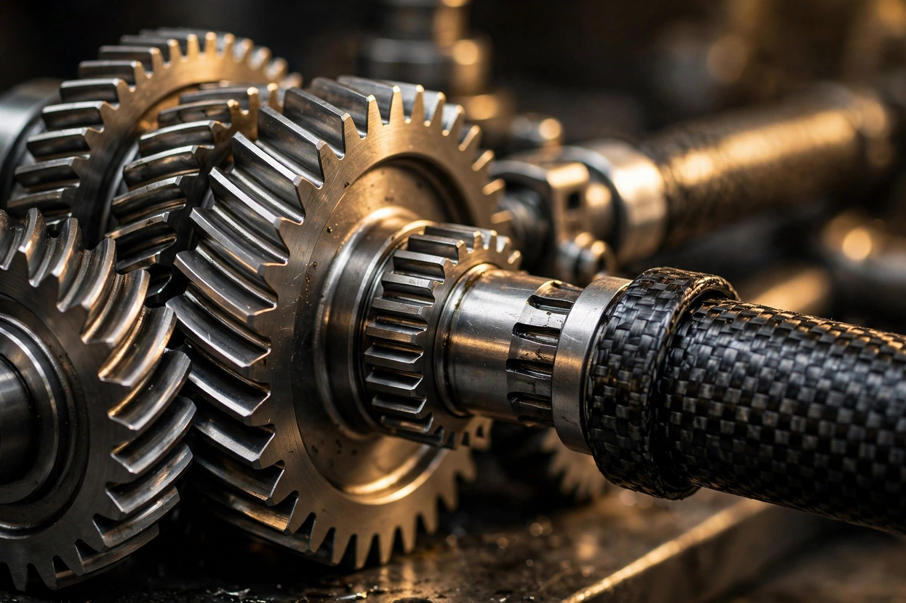

The U-Turn Gearbox: How Toyota Folded a Hybrid V8 Into the GR GT's Tail
At Laguna Seca in August, Toyota's 641-horsepower flagship turned its first public laps on American soil. The power figure got the headlines, but the packaging deserves them more: a carbon-fiber torque tube, a rear transaxle with a gearset that sends power on a U-turn, and a front-engine coupe carrying 55 percent of its weight on the rear axle.

On August 14, 2026, between 12:55 and 1:10 in the afternoon, a camouflage-free Toyota GR GT rolled out of the pit garages at WeatherTech Raceway Laguna Seca and ran hot laps in front of a paying crowd, with Jack Hawksworth at the wheel. It was the Rolex Monterey Motorsports Reunion, which had made Japanese racing machinery its featured marque, and Toyota chose it for the GR GT's first public, un-camouflaged running on American pavement. Nobody published a lap time, and that was never the point.
What matters is what was underneath: Toyota's flagship, due around 2027, pairs a brand-new 4.0-liter twin-turbo V8 with a single electric motor, targets at least 641 horsepower and 627 lb-ft, and routes every bit of it through a carbon-fiber-reinforced plastic torque tube to a transaxle bolted to the rear axle. Somewhere inside that rear housing, a conical set of gears takes the driveshaft's output and turns it around, sending power forward again into a mechanical limited-slip differential. Power leaves the engine heading backward, makes a U-turn, and arrives at the wheels. It sounds like a packaging compromise, though Toyota insists it is the opposite.
An engine designed around its own height
Start at the front, because Toyota's engineers clearly started there and refused to leave. Toyota's 4.0-liter V8 is the company's first hot-vee twin-turbo eight, with both turbochargers nested in the valley between the cylinder banks, and the entire program seems to have been governed by a single obsession with vertical packaging: not shorter in length, but shorter in height.
Bore and stroke measure 87.5 by 83.1 millimeters, and Toyota deliberately shortened the stroke from what the bore would comfortably allow, because a shorter stroke means a shorter crank throw, which means a shallower block, which means the whole engine sits lower in the chassis. Dry-sump lubrication deletes the deep oil pan entirely, and what little pan remains was shaved thinner than usual. Its turbos sit so low that their tops are roughly level with the driver's chin. When your forced-induction hardware is chin-high in a car 47 inches tall, you have won the packaging war before the first dyno pull.
Internals are forged throughout, with pistons, rods, and a cross-plane crank built for boost, and fueling runs both direct and port injection. None of this is exotic in 2026, when every serious performance V8 has forged guts and dual injection. What stands out is the discipline: every decision serves the low cowl line and the center of gravity, not the spec sheet. Toyota is chasing 641 horsepower as a floor, not a ceiling, with the company saying figures may improve before production. Horsepower is the least interesting number on this car.
Why a tube, and why carbon fiber
A torque tube is an old idea wearing new materials. Instead of a driveshaft spinning exposed between the transmission and the rear axle, the shaft runs inside a rigid tube that bolts the engine to the transaxle, making the whole driveline one stressed assembly. Porsche used steel torque tubes in the 924, 944, and 928. Every Corvette since the C5 has used one. Alignment is the tube's job: it keeps the engine and gearbox in fixed relation so the driveline doesn't flex under load, which sharpens shift quality and lets the chassis engineers treat the powertrain as a structural member.
Toyota's version is carbon-fiber-reinforced plastic, and the material choice matters beyond the weight saving. A CFRP tube is torsionally stiff in a way that lets engineers tune its natural frequency away from the driveline's excitation frequencies, which means less vibration transmitted into the cabin at exactly the engine speeds where a 641-horsepower V8 would otherwise buzz through the structure. It also doesn't expand and contract with heat the way aluminum does, so the alignment it enforces stays enforced on a hot track day. This is the kind of detail that never appears in a brochure and determines whether a car feels expensive or merely fast.
A gearbox that turns power around
Here is where the GR GT gets genuinely strange. At the back of the carbon tube sits a housing containing three things: the hybrid system's motor-generator, an eight-speed automatic transmission, and a mechanical limited-slip differential. A wet-start clutch replaces the torque converter in the transmission, cutting rotating mass and sharpening response at the cost of the smoothness a converter provides. Ahead of the gearbox sits the motor-generator, which exists for one job: filling the torque hole during gear changes so acceleration never pauses while the clutches swap cogs.
Then comes the conical gearset: because the driveshaft arrives at the rear of the housing but the differential needs to send power outward to the half-shafts, the gears reverse the power flow's direction, effectively folding the powertrain back on itself. Toyota's engineers say this U-turn shortens the overall powertrain, and the geometry supports the claim: stacking the gearbox and differential in a folded arrangement compresses the driveline's length instead of stringing components in a line. Shorter driveline, shorter wheelbase needed, less mass hanging behind the rear axle.
Cutaway photos of the unit look like watchmaking scaled up. Polished shafts, precisely cut gearsets, everything visible and deliberate. Whether that beauty survives contact with road grime and dealer service bays is a separate question, and Toyota deserves credit for naming serviceability as a design consideration up front rather than discovering it through warranty claims.
Forty-five fifty-five
All of this hardware exists to produce one number: 45:55. That is the GR GT's targeted front-to-rear weight distribution, achieved in a front-engine car by pushing the engine almost entirely behind the front axle line, hanging the transaxle off the rear, and placing the battery and fuel tank where the balance sheet demands. For reference, a front-engine coupe with a conventional gearbox typically lands near 50:50 or slightly nose-heavy. Getting to 45:55 without moving the engine behind the driver is a packaging achievement, full stop.
Helping it along is Toyota's first all-aluminum spaceframe, a first for the company, with body panels in aluminum or carbon-fiber-reinforced plastic. Double wishbones with forged aluminum arms sit at all four corners. Target weight is 3,858 pounds or less, which is honest mass for a hybrid V8 coupe with this much hardware. Nobody is calling it light; Toyota is calling it balanced, and the distinction matters more than the scale reading.
Stopping comes from Brembo carbon-ceramics behind 20-inch wheels wearing bespoke Michelin Pilot Sport Cup 2 rubber, 265-section fronts and massive 325-section rears. A steering-wheel knob adjusts the multi-stage stability control. Toyota even spent development effort on the sound, aiming, in its words, to convey changes in thermal energy to the driver. That is either poetry or marketing, possibly both.
Sibling rivalry: the GT3 skips the hybrid
Developed alongside the road car, the GR GT3 takes the same twin-turbo V8 and the same aluminum spaceframe and deletes the hybrid system entirely, substituting a purpose-built racing transmission for the road car's eight-speed. It exists for FIA GT3 customer racing, and the co-development is the point: lessons flow both directions, and the road car gets to claim genuine motorsport parentage instead of the usual sticker-and-spoiler treatment.
This deserves a moment of appreciation, because most manufacturers develop the race car after the road car, or never. Toyota ran both programs together, which is expensive and organizationally painful, and it shows in details like the dry sump and the low-mount suspension geometry. Whether it shows on a stopwatch at Laguna Seca next year is the test that counts.
What we don't know yet
Honesty requires the caveats. Every performance figure Toyota has published is a development target with "or greater" attached, and the company has said openly that output, top speed, and weight may change before the car reaches customers around 2027. I have not driven it, and nobody outside Toyota has driven it hard. Those Laguna Seca laps were demonstration runs, and demonstration runs prove that a prototype moves under its own power, which is the lowest bar in engineering.
Worth asking: does the wet-start clutch survive traffic without the torque converter's forgiveness? Does the conical gearset whine at highway speeds, and does the CFRP tube's tuned frequency stay tuned after 50,000 miles of heat cycles? Does the motor-generator's torque fill feel seamless or like a video game assist? And the big one: can Toyota service this thing at dealers, or does every transaxle issue become a flatbed ride to a specialist?
None of those questions diminish what ran at Laguna Seca in August. A manufacturer looked at the most complicated driveline layout in the business, added a hybrid motor and a carbon tube, folded the gearbox in half with a conical gearset, and put 55 percent of the weight on the driven wheels of a front-engine car. The 641 horsepower is the headline, but the U-turn is the story.
| Spec | GR GT (development targets) |
|---|---|
| Engine | 4.0L twin-turbo V8, hot-vee, dry sump |
| Bore x stroke | 87.5 x 83.1 mm (shortened for height) |
| System output | 641+ hp, 627+ lb-ft |
| Hybrid layout | Single motor-generator ahead of transaxle, torque-fill during shifts |
| Driveline | CFRP torque tube to rear transaxle |
| Transmission | 8-speed automatic, wet-start clutch, conical U-turn gearset, mechanical LSD |
| Chassis | Toyota's first all-aluminum spaceframe |
| Weight distribution | 45:55 front/rear |
| Target weight | 3,858 lbs or less |
| Dimensions | 189.8 in L x 78.7 in W x 47.0 in H, 107.3 in wheelbase |
| Brakes / tires | Brembo carbon-ceramic; Michelin Pilot Sport Cup 2, 265/35R20 F, 325/30R20 R |
| Race sibling | GR GT3: same V8 and spaceframe, no hybrid, racing transmission, FIA GT3 |